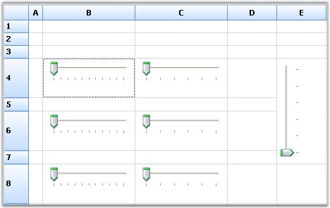

A Slider control embedded in a grid cell is termed as a Slider Cell. Slider control can be embedded in the grid cells by using Slider cell type. The class SliderStyleProperties provides custom properties specific to the Slider control. All the properties support the style inheritance mechanism.
The Slider control can be embedded by using the following set of codes:
1. Using C#
|
[C#]
gridControl1.CellModels.Add("Slider", new SliderCellModel(gridControl1.Model)); GridStyleInfo style; style = gridControl1[4, 5]; SliderStyleProperties sp = new SliderStyleProperties(style); style.CellType = "Slider"; sp.Maximum = 40; sp.Minimum = 0; sp.TickFrequency = 8; sp.LargeChange = 16; sp.SmallChange = 4; sp.Orientation = Orientation.Vertical; |
2. Using VB.NET
|
[VB.NET]
gridControl1.CellModels.Add("Slider", New SliderCellModel(gridControl1.Model)) Dim style As GridStyleInfo style = gridControl1(4, 5) Dim sp As SliderStyleProperties = New SliderStyleProperties(style) style.CellType = "Slider" sp.Maximum = 40 sp.Minimum = 0 sp.TickFrequency = 8 sp.LargeChange = 16 sp.SmallChange = 4 sp.Orientation = Orientation.Vertical |

Figure 113: Slider Cell